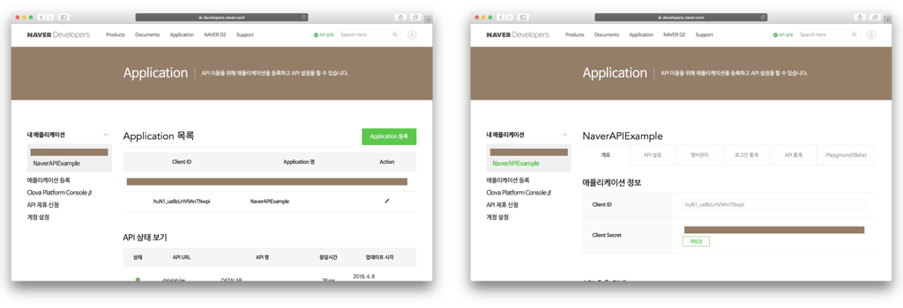

이번 기술 블로그에서는 네이버 개발자 센터에서 제공하는 네이버 오픈 API를 사용하는 방법에 대해서 알려드리고자 합니다. 오픈 API란, API 중에서 플랫폼의 기능 또는 콘텐츠를 외부에서 웹 프로토콜(HTTP)로 호출해 사용할 수 있게 개방(open)한 API를 의미합니다. 현재 네이버 오픈 API로 활용할 수 있는 기술에는 네아로(네이버 아이디로 로그인), 지도, 검색이 있으며, Clova의 음성 인식 기술과 음성 합성 기술, 얼굴 인식 기술, Papago의 기계 번역 기술 등이 있습니다.
에베베벱 여기설명넣어야할거가틍데ㅡㅡㅡㅡㅡㅡㅡㅡㅡㅡㅡㅡㅡㅡㅡㅡㅡㅡㅡㅡㅡㅡㅡㅡㅡㅡㅡㅡㅡㅡㅡㅡㅡㅡㅡㅡㅡㅡㅡㅡㅡㅡㅡㅡㅡㅡㅡㅡㅡㅡㅡㅡㅡㅡㅡㅡㅡㅡㅡㅡㅡㅡㅡㅡㅡㅡㅡㅡㅡㅡㅡㅡㅡㅡㅡㅡㅡㅡㅡㅡㅡ
이번 포스트에서는 영화 검색 애플리케이션을 만들 것입니다. 사용자로부터 영화 검색어를 입력받은 후, 네이버 오픈 API 호출을 통해 검색어와 일치하는 영화 정보를 불러와 테이블뷰에 표시합니다. 그리고 원하는 영화를 터치하면 각 영화의 세부 정보를 보여줍니다.
구현하고자 하는 핵심 기능은 네이버의 검색 API를 사용한 영화 검색 기능입니다. 영화 포스터 이미지 다운로드는 비동기 작업을 사용해 다운로드 작업을 뒤로 미루고, 포스터 이미지가 모두 다운로드 될 때까지 기다릴 필요 없이 바로 검색 결과를 확인할 수 있도록 테이블 뷰를 구성합니다. 마지막으로, HTTP Request를 사용하여 영화의 세부 정보를 보여주는 사파리 뷰를 구성합니다.
시작하기에 앞서 GitHub에서 스타터 프로젝트를 다운로드하여 각 단계를 따라가시면 됩니다. 프로젝트를 처음부터 만드시고 싶으신 분들은 아래 사진과 같이 UI를 구성하시면 됩니다. 프로젝트를 만드실 때에는 애플리케이션 이름과 애플리케이션 Bundle ID를 기억해 두었다가 오픈API 신청 시 기입하시기 바랍니다.
네이버 오픈 API를 사용하기 위해서는 네이버로부터 클라이언트 아이디와 클라이언트 시크릿을 발급받아야 합니다. 이는 네이버 오픈API 사용자가 인증된 사용자인지 확인하는 고유한 아이디와 비밀번호로, 네이버 개발자센터의 애플리케이션 등록 메뉴에서 애플리케이션을 등록하면 발급되는 값입니다.
위와 같이 애플리케이션 이름을 프로젝트명과 동일하게 작성한 다음, 사용 API를 검색으로 설정합니다. 마지막으로 비로그인 오픈API 서비스 환경에서 iOS 설정을 추가한 다음, Xcode 프로젝트 생성 시 애플리케이션의 Bundle ID를 정확하게 입력합니다.
애플리케이션 등록을 마치고 나면, 내 애플리케이션 항목 아래 등록한 애플리케이션의 목록이 나타납니다. 자신의 애플리케이션명을 클릭하면, 애플리케이션 정보가 나타나며, 자신의 클라이언트 아이디와 클라이언트 시크릿을 확인할 수 있습니다.
먼저, Model.swift를 만들어 Movie 클래스를 만들어 줍니다.
지금부터는 ReplayKit을 사용하므로 `import ReplayKit` 을 통해 ReplayKit을 가져옵니다. 이제 `startRecording() `메소드를 구현해 보겠습니다.
위 코드에서 사용된 RPScreenRecorder는 현재 화면에 대해서 녹화를 시작하거나 종료하기 위해서 사용합니다. RPScreenRecorder는 공유객체를 사용하며, 객체가 가지고 있는 startRecording 메소드를 호출함으로써 녹화를 시작하게 됩니다. 녹화가 시작된 이후에 처리해야 할 일은 startRecording 메소드의 클로저 매개변수에 포함시키면 됩니다. 위 코드에서는 녹화가 정상적으로 실행되었을 때 `startAnimatingMap()` 메소드를 호출함으로써, 녹화가 시작되면 자동으로 지도가 움직일 수 있도록 하였습니다. 그럼 이번에는 `startAnimatingMap()` 메소드와 `stopAnimatingMap()` 메소드를 구현해 보겠습니다.
startAnimatingMap() 메소드에 대해서 좀 더 자세히 알아보겠습니다. currentLocation변수는 현재 지도 위에 표시되고 있는 지역의 인덱스를 나타냅니다. 초기값은 0으로 설정되어 있습니다. 또한 placemarks배열은 사용자가 앞서 입력한 지역 데이터를 포함하고 있습니다. showLocationOnMap(index:) 메소드는 매개변수로 받은 인덱스의 위치로 지도를 움직입니다. 만약 showLocationOnMap(index: 0) 이라면 placemarks 배열의 0번째 인덱스에 저장된 지역을 지도 위에 보여주게 됩니다. Timer는 3초마다 한 번씩 `animatesMap()` 메소드를 호출하도록 설정되어 있습니다. animatesMap() 메소드는 사용자가 입력한 지역을 지도 위에 보여주는 역할을 합니다. 따라서 3초마다 지도는 사용자가 입력한 다음 지역으로 자동으로 움직이게 됩니다. 만약 사용자가 입력한 모든 지역을 지도 위에 모두 보여주었다면, stopAnimatingMap() 메소드를 호출해서 Timer를 종료시키고 녹화를 중지하는 `stopRecording()` 메소드를 호출하게 됩니다.
다음은 `stopRecording()` 메소드를 구현해서 녹화를 끝내는 방법에 대해서 알아보겠습니다. `stopRecording()` 메소드가 호출되는 경우는 크게 두 가지가 있습니다. 첫번째는 사용자가 녹화 중간에 종료 버튼을 눌렀을 경우입니다. 두번째는 지도 위의 애니메이션이 모두 종료된 후 자동으로 녹화가 종료되는 경우입니다. 이 두가지 경우를 모두 생각하여 메소드를 구현해 보겠습니다.
앞서 startRecording() 메소드를 구현할 때와 마찬가지로 RPScreenRecorder의 공유객체를 사용합니다. 만약 녹화가 진행되고 있는 상태(isRecording)에서 stopRecording() 메소드가 호출되었다면, 사용자가 녹화를 중지한 것이라고 판단할 수 있습니다. 반면 녹화가 진행되고 있지 않은 상태라면 지도 애니메이션이 끝까지 진행되어 정상적으로 녹화를 중지해야 할 때라고 판단할 수 있습니다.

위 다이어그램은 RPScreenRecorder의 stopRecording() 메소드가 취할 수 있는 2가지 행동을 보여줍니다. 우선 사용자가 녹화를 중단한 상태라면, stopRecording() 의 클로저 안에서 discardRecording() 함수를 실행시킬 수 있습니다. discardRecording() 은 현재 녹화하고 있던 내용을 지울 때 사용합니다. 주의하실 점은 discardRecording() 메소드는 stopRecording() 클래스의 클로저 안에서만 동작할 수 있다는 점입니다. 여기서는 discardRecording() 메소드를 통해 Timer를 해지시켰습니다.
이번에는 지도 애니메이션이 종료되어 정상적으로 녹화를 종료하는 부분에 대해서 살펴보겠습니다. stopRecording() 메소드가 가지고 있는 클로저에는 매개변수로 RPPreviewViewController를 가지고 있습니다. RPPReviewViewController는 녹화된 동영상을 저장, 공유할 수 있고 원하는 부분만 잘라내어 저장할 수 있는 다양한 기능을 포함하고 있습니다. 여기서는 녹화가 정상적으로 종료되었을 때 RPPreviewViewController를 modal로 띄워서 보여주도록 구현하였습니다.
이번에는 RPPreviewViewControllerDelegate를 사용해서 PreviewViewController에서 화면을 처리하는 방법을 구현해 보겠습니다.
위의 코드에서는 RPPreviewViewControllerDelegate 중 previewControllerDidFinish(:) 메소드를 사용해서 RPPreviewViewController에서 작업이 끝나면 MasterViewController로 돌아가도록 설정하였습니다. previewControllerDidFinish(:) 메소드는 사용자가 RPPreviewViewController에서 Cancel 혹은 Save 버튼을 눌렀을 때 호출이 됩니다.

여기까지 잘 따라오셨나요? 그럼 코드를 한번 실행시켜 보세요. 원하는 지역을 입력한 후에 녹화를 시작하면 자동으로 지도가 움직이고 애니메이션이 종료되었을 때 자동으로 RPPreviewViewController가 modal형태로 올라오는 것을 확인하실 수 있을겁니다. RPPreviewViewController는 위의 사진과 같이 생겼답니다 :]
이제 모든 작업이 다 끝났습니다. 여러분은 본인이 입력한 지역에 따라 자동으로 움직이는 지도를 녹화하는 애플리케이션을 만들었습니다. 그런데 한가지 아쉬운 점이 있네요. 여러분이 녹화한 화면을 유심히 보셨다면, 화면 위의 Navigation Bar가 그대로 노출이 되어있는 것을 볼 수 있을겁니다. ReplayKit은 현재 스크린을 통째로 녹화하기 때문에 원하지 않는 부분은 녹화가 시작되기 전에 숨겨야 합니다. 그럼 지금부터 녹화가 시작될 때 Navigation Bar를 숨기는 부분을 구현해 보겠습니다.
위의 방법대로 코드를 구현하신 다음 다시 실행해보세요. 이제 지도만 녹화가 된 것을 확인하실 수 있습니다!
지금까지 ReplayKit의 녹화 기능에 대해서 간단하게 살펴 보았습니다. RPScreenRecorder를 사용하면 간단하게 현재 스크린을 녹화할 수 있으며, 녹화한 결과는 RPPreviewViewController를 이용해 다양하게 사용할 수 있다는 것을 확인해 보았습니다. 프로젝트의 좀 더 자세한 구현 내용은 앞서 올려드린 Github의 ReplayKitExampleComplete를 통해 확인해 볼 수 있습니다. 본 포스트에 대한 제안 사항이나 궁금하신 점이 있다면 언제든 연락 주시면 감사하겠습니다.